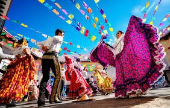

Chiclayo, conocida como la “Capital de la Amistad”, es una de las ciudades más importantes del norte del Perú. Su historia se remonta a épocas prehispánicas, cuando el territorio estuvo habitado por antiguas civilizaciones como los Mochicas y posteriormente los Lambayeque o Sicán, culturas que destacaron por su avanzada ingeniería, cerámica y orfebrería.
Durante la época colonial, Chiclayo comenzó a consolidarse como un punto estratégico para el comercio y la agricultura, gracias a su cercanía al mar y a sus fértiles valles. En el siglo XVIII, el crecimiento poblacional y económico impulsó su desarrollo urbano, convirtiéndola en un importante centro regional.
Chiclayo fue fundada oficialmente el 18 de abril de 1835, durante el gobierno del presidente Felipe Santiago Salaverry. A partir de ese momento, la ciudad experimentó un notable crecimiento, impulsado por la actividad comercial, el ferrocarril y el intercambio entre la costa y la sierra.
En la actualidad, Chiclayo es un destacado centro cultural, económico y turístico. Su historia se refleja en museos de gran importancia, como el Museo Tumbas Reales de Sipán, que alberga uno de los hallazgos arqueológicos más importantes del Perú: el Señor de Sipán.
La combinación de su legado ancestral, su desarrollo histórico y la calidez de su gente hacen de Chiclayo una ciudad clave en la identidad y el progreso del norte peruano.